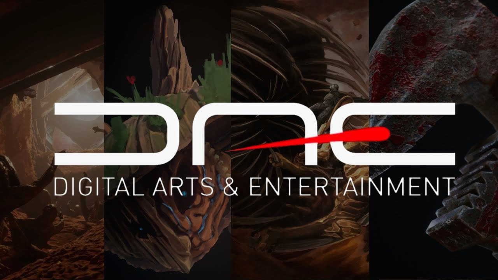
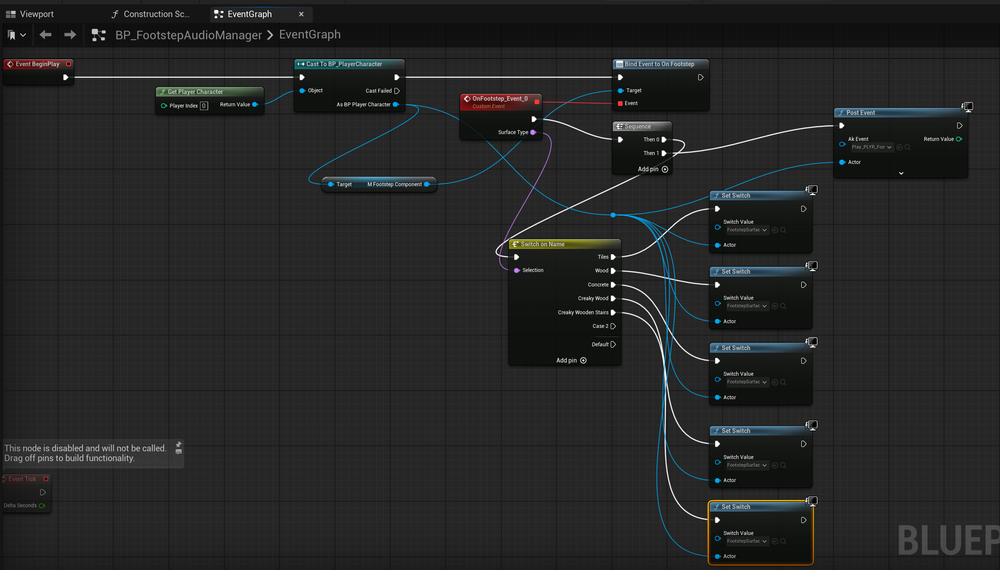
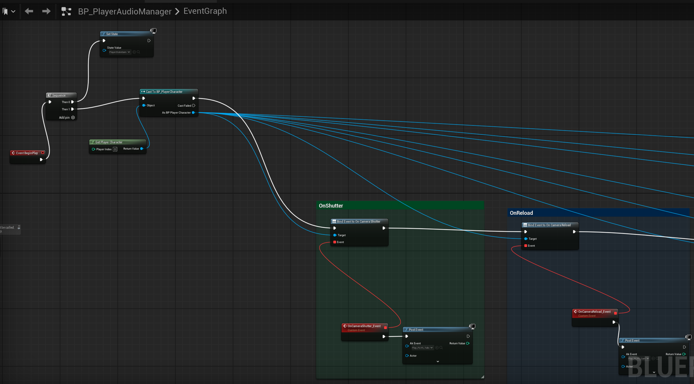
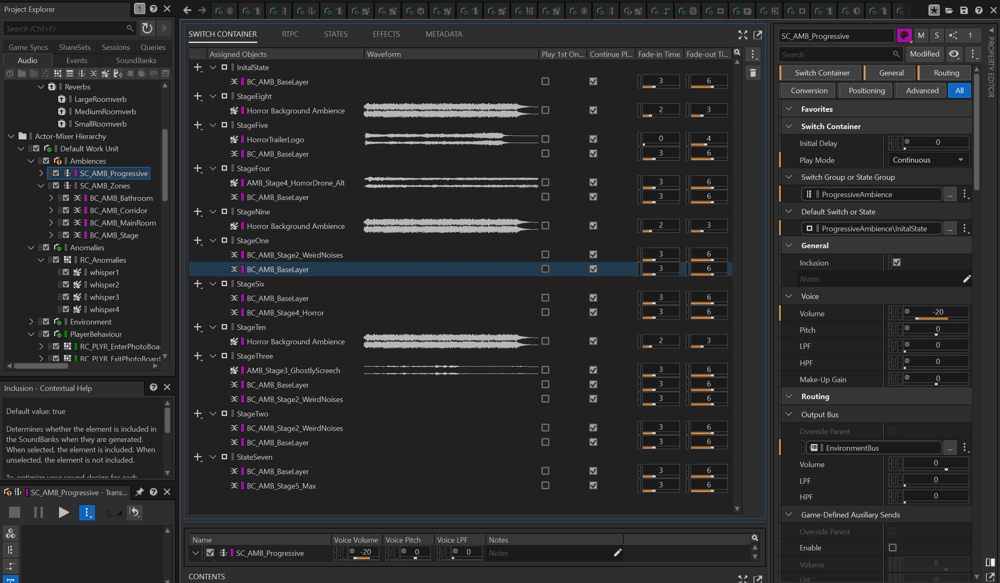
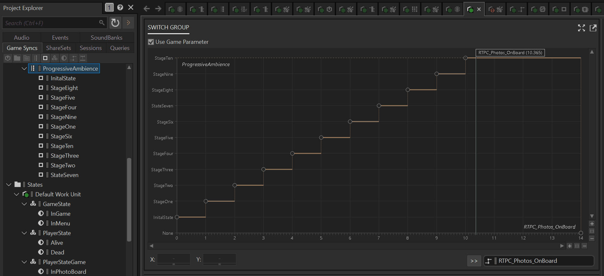

Project Overview
Black-and-white horror game where you photograph paranormal events in a 1960s Irish pub. Sound is your main tool for finding anomalies.
Core Concept
You have a Polaroid camera and 25 shots across 5 cartridges.
Anomalies happen every 30-50 seconds. Glasses levitate, shadows
move on their own, chairs spin. Audio cues tell you where to
look: a glass clinks, footsteps echo from nowhere, a chair
scrapes across the floor. Without sound, you're blind. Once you
capture the evidence, arrange the photos on a corkboard in order
to piece together what's happening.
🎧 Headphones highly recommended.
The game uses binaural audio for precise 3D positioning. Stereo
speakers won't give you the directional accuracy you need.
3-Stage Anomaly Detection
Every anomaly triggers three audio layers:
Alert (0.5s): Static burst marks the spawn
Hint (1-2s): Directional sound points you there
Presence (loop): Sustained until captured
No visuals, no UI markers, just sound. Audio is the detection
system.
My Role
Sound Lead. I built the audio architecture: dynamic footstep systems, delegate-based player audio, RTPC-driven tension progression, and Wwise integration. More systems in development for final release.
Technical Stack
Unreal Engine 5.5 • Wwise • C++ • Blueprint • Physical Materials • RTPC • Switch Containers
Multi-Institutional Collaboration
Multi-institutional collaboration between:
RITCS
Royal Institute for Theatre, Cinema & Sound : Narrative design and story development
KASK Conservatory
Music composition

Howest DAE
Digital Arts & Entertainment: Game development and audio implementation
Audio Prototypes
Music and soundscape concepts for Shadow Frames.
Music Prototype
Palette Soundscape
Footstep System: Surface Detection & Audio Routing
Physical material detection drives dynamic audio switching for realistic surface-based footsteps.
WHAT
System detects surface type under player (wood, tiles, concrete) and automatically switches appropriate footstep sounds in Wwise. Each player step matches the material they're walking on.
HOW
C++ component performs line trace downward from player position, detects Physical Material, maps it to Wwise Switch name, and Blueprint Audio Manager receives delegate and plays appropriate sound.
WHY
Separation of Concerns - C++ handles detection logic, Blueprint handles audio. Delegates provide loose coupling between systems. You can add new surfaces without touching C++ code.
RESULT
Realistic footsteps matched to surface, zero manual switching, easy expansion with new materials. System works automatically for every player step.

FootstepComponent.cpp: Surface Detection
WHAT: Function detects surface type under player using line trace downward from player position.
HOW: Line trace checks object's Physical Material, then maps SurfaceType enum to Wwise Switch name (Tiles, Wood, CreakyWood, Concrete).
WHY: Using Physical Material allows automatic detection without manually tagging each surface. The enum-to-Switch mapping is a one-time setup that connects Unreal's surface system to Wwise - this is configuration, not hardcoded audio calls. Audio designer can modify Switch names in Wwise without code changes.
FName UFootstepComponent::DetectSurfaceType() const
{
const AActor* Owner = GetOwner();
const UWorld* World = GetWorld();
if (!Owner || !World) return FName("Concrete");
FHitResult Hit;
const FVector Start = Owner->GetActorLocation();
const FVector End = Start - FVector(0.f, 0.f, TraceDistance);
FCollisionQueryParams QueryParams;
QueryParams.AddIgnoredActor(Owner);
QueryParams.bReturnPhysicalMaterial = true;
if (World->LineTraceSingleByChannel(Hit, Start, End, ECC_WorldStatic, QueryParams))
{
if (UPhysicalMaterial* PhysMat = Hit.PhysMaterial.Get())
{
// Map PhysicalSurface enum to Wwise Switch names
switch (PhysMat->SurfaceType)
{
case SurfaceType1: return FName("Tiles");
case SurfaceType2: return FName("Wood");
case SurfaceType4: return FName("CreakyWood");
default: return FName("Concrete");
}
}
}
return FName("Concrete");
}Player Audio System: Delegate-Based Communication
Clean separation between player actions and audio responses using Blueprint delegates.
WHAT
System connects player actions (camera shot, zoom, photoboard entry) with appropriate audio events in Wwise. Each player action automatically triggers corresponding sound.
HOW
PlayerCharacter in C++ defines multicast delegates. When player performs action, delegate is broadcast. Blueprint Audio Manager listens to these delegates and calls appropriate Wwise Events.
WHY
Delegates provide loose coupling - PlayerCharacter knows nothing about audio, Audio Manager knows nothing about player logic. Each system can be tested and modified independently.
RESULT
Clean architecture, easy addition of new audio actions, zero hardcoded calls. Audio designer can modify audio without touching player code.

PlayerCharacter.h: Delegates
WHAT: Definition of multicast delegates for player actions that trigger audio events.
HOW: DECLARE_DYNAMIC_MULTICAST_DELEGATE creates delegate that can be broadcast from C++ and listened to in Blueprint. UPROPERTY(BlueprintAssignable) allows binding in Blueprint.
WHY: Multicast delegates allow multiple listeners (e.g. Audio Manager) to react to one action. Dynamic delegates work with Blueprint, giving audio designer full control without modifying C++ code.
// Delegates for player actions that trigger audio events
DECLARE_DYNAMIC_MULTICAST_DELEGATE(FOnCameraShutterDelegate);
DECLARE_DYNAMIC_MULTICAST_DELEGATE(FOnCameraZoomInDelegate);
DECLARE_DYNAMIC_MULTICAST_DELEGATE(FOnPhotoboardEnterDelegate);
UCLASS()
class APlayerCharacter : public ACharacter
{
public:
UPROPERTY(BlueprintAssignable, Category = "Audio")
FOnCameraShutterDelegate OnCameraShutter;
UPROPERTY(BlueprintAssignable, Category = "Audio")
FOnCameraZoomInDelegate OnCameraZoomIn;
UPROPERTY(BlueprintAssignable, Category = "Audio")
FOnPhotoboardEnterDelegate OnPhotoboardEnter;
};Dynamic Tension System: RTPC-Driven Ambience
Progressive ambient intensity scales with game state - photos placed on board increase tension.
WHAT
System dynamically changes ambient intensity based on number of photos placed on board. More photos = more tense atmosphere. RTPC value 0-5 controls ambient layers in Wwise.
HOW
PhotoboardWidget tracks number of important photos. When player places photo, UpdateAmbientRTPC() finds AkAmbientSound actor and sets RTPC value. Wwise automatically crossfades between ambient layers.
WHY
RTPC gives smooth transitions between tension states. no jumps. I can precisely control in Wwise how each ambient layer responds to RTPC value. Full control over emotional progression.
RESULT
Smooth tension progression, zero audio jumps, easy curve modification in Wwise. Atmosphere automatically adapts to player progress.
PhotoboardWidget.cpp: RTPC Update
WHAT: Function updates RTPC value in Wwise based on number of photos placed on board.
HOW: Validates world exists, then finds AkAmbientSound actor by tag 'AmbientProgressive' (more efficient and reliable than name string search). Sets RTPC value (0-5) corresponding to number of important photos. Wwise automatically crossfades between ambient layers.
WHY: RTPC allows smooth transitions between tension states. Audio designer can precisely control crossfade curves for each layer in Wwise, giving full control over emotional progression without code modifications.
void UPhotoboardWidget::UpdateAmbientRTPC()
{
if (!PhotosOnBoardRTPC) return;
const UWorld* World = GetWorld();
if (!World) return;
// Find actor by tag (more efficient and reliable than name search)
AActor* TargetActor = nullptr;
TArray<AActor*> FoundActors;
UGameplayStatics::GetAllActorsOfClass(World, AAkAmbientSound::StaticClass(), FoundActors);
for (AActor* Actor : FoundActors)
{
if (Actor && Actor->ActorHasTag(FName("AmbientProgressive")))
{
TargetActor = Actor;
break;
}
}
if (TargetActor)
{
UAkGameplayStatics::SetRTPCValue(
PhotosOnBoardRTPC,
ImportantPhotosAlreadyPlaced,
0,
TargetActor
);
}
}Wwise Architecture: Switch Containers & Photoboard Integration
Continuation of the RTPC system - Switch Containers in Wwise respond to photos collected on the photoboard, creating dynamic ambient layers.
WHAT
Switch Container system in Wwise responds to the number of photos collected on the photoboard. As player collects more photos, different ambient layers are activated through Switch Containers, working in conjunction with the RTPC system.
HOW
The RTPC value from PhotoboardWidget (0-5 based on photos) drives Switch Container selection in Wwise. Each Switch state corresponds to different ambient layers. Wwise automatically crossfades between layers as photos are collected.
WHY
Switch Containers provide discrete layer control, RTPC handles smooth transitions. This combo lets me do both structural changes (different ambient sets) and smooth intensity progression. I control each layer's response in Wwise.
RESULT
Dynamic ambient system that responds to player progress through photoboard collection. Additional layers and complexity are in development for final release.


Gameplay Showcase
Note: This is a demonstration from Sprint 3 of production. The game is still in active development, far from final release. This video showcases Wwise audio systems implementation and is for demonstration purposes only.
Audio Documentation
Complete technical documentation covering all audio systems, asset pipeline, and implementation guidelines.
Challenges & Solutions
Problems encountered during development and how I addressed them.
Workflow Optimization Tools
Problem:
Working in a multi-institutional collaboration with students, workflow issues frequently disrupted development. Wwise integration would break after Perforce pulls, and Unreal Engine compilation times were causing significant downtime.
Solution:
Created Wwise Unreal Fixer and Unreal Engine Rebuilder tools to streamline the workflow. While not fully independent work (collaborative effort), these tools were primarily developed to help students work more efficiently. The Wwise Fixer automatically restores broken Wwise integration after Perforce pulls, and the Rebuilder automates the compilation process to reduce downtime.
Technical Stack
Audio Middleware
Wwise 2024.1
Game Engine
Unreal Engine 5.5
Audio Tools
Reaper, Waves J37, PaulXStretch, Valhalla FreqEcho
Performance
Sub 5% CPU, optimized streaming